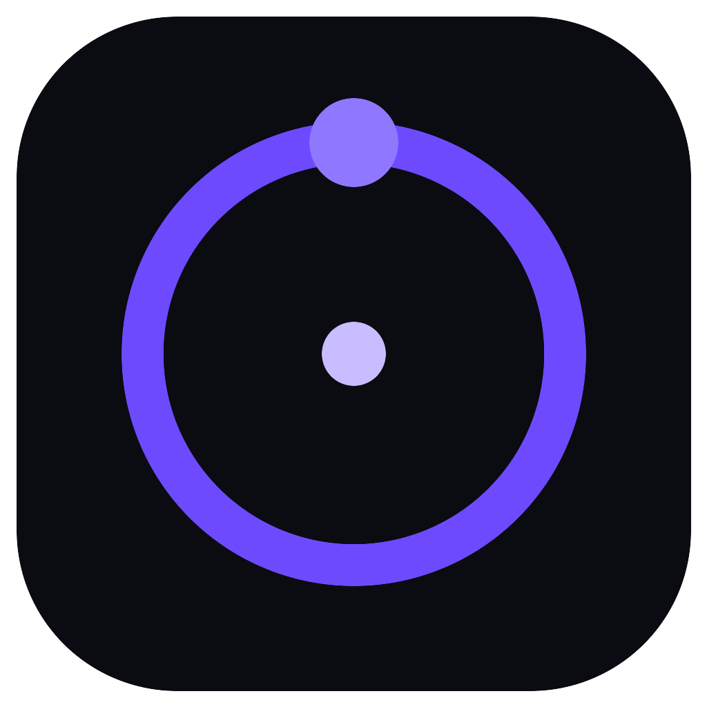

Shift-drag a file
Anywhere on the desktop, from Explorer or Finder, or straight from the tray. The ring opens under the pointer without interrupting the drag.

Orbitv0.2.0 · Shift-drag on Windows, macOS & X11
Shift-drag a file anywhere on your desktop. Orbit blooms under the cursor, you pick a format, and the result lands beside the original — local, atomic, and never uploaded.
No administrator prompt · Prefer an .msi?
Three moves
No import dialog, no project file, no window to find. The ring appears where your work already is, then gets out of the way.
Anywhere on the desktop, from Explorer or Finder, or straight from the tray. The ring opens under the pointer without interrupting the drag.
Only what your file can actually become. Drop to run with defaults, or hold Alt for quality, dimensions, page ranges and frame steps.
name (converted).ext, written atomically. Existing files are never
overwritten — the next one becomes (converted 2).
Under the glass
The parts you want from a power tool, without the power-tool interface. No account, no queue, no “upgrade to export”.
63 formats and 162 extensions, from HEIC to JPG and MOV to MP4. Resolved from a data-driven registry — not a hardcoded menu.
Bundle resize → convert → strip metadata into a single pick. Chains run in order; intermediates stay hidden and are cleaned up.
Point Orbit at a folder and choose one rule. New files are converted once they have settled — including files synced by another app.
PDF pages and video frames become numbered runs: scan (page 001).png,
clip (frame 001).png. No collisions.
Every published file is an append-only log on your machine. Reveal the folder or clear the log from settings. Nothing leaves the device.
orbit convert --to webp photo.png. Same registry, same defaults, same
engines — for scripts, cron jobs and CI.
Download
The Windows installer is a direct download. macOS and Linux are one command away if you would rather stay in the terminal.
10 / 11 · x64 · per-user install
Download the installer and run it. No administrator prompt, no reboot. WebView2 — the renderer Windows may be missing — is fetched automatically if needed.
Not code-signed yet, so SmartScreen may ask: More info → Run anyway. The source and CI-built installers are public.
12+ · Apple silicon or Intel
base=https://github.com/devsurx/Orbit/releases/download/v0.2.0
curl -L -o ~/Downloads/Orbit.dmg "$base/Orbit_0.2.0_aarch64.dmg"
open ~/Downloads/Orbit.dmgbase=https://github.com/devsurx/Orbit/releases/download/v0.2.0
curl -L -o ~/Downloads/Orbit.dmg "$base/Orbit_0.2.0_x64.dmg"
open ~/Downloads/Orbit.dmgx64 · AppImage, .deb or .rpm
base=https://github.com/devsurx/Orbit/releases/download/v0.2.0
curl -LO "$base/Orbit_0.2.0_amd64.deb"
sudo apt install ./Orbit_0.2.0_amd64.debbase=https://github.com/devsurx/Orbit/releases/download/v0.2.0
curl -LO "$base/Orbit_0.2.0_amd64.AppImage"
chmod +x Orbit_0.2.0_amd64.AppImage
./Orbit_0.2.0_amd64.AppImagebase=https://github.com/devsurx/Orbit/releases/download/v0.2.0
sudo dnf install "$base/Orbit-0.2.0-1.x86_64.rpm"libxtst6 and libxi6.Every build lives on GitHub Releases · v0.2.0 · source under MPL-2.0.
Before you install
No. Orbit uses the engines already on your machine and falls back to a built-in image engine that needs nothing at all. Installing FFmpeg, ImageMagick 7, Ghostscript, Poppler, qpdf, LibreOffice or Tesseract unlocks more formats and better fidelity. The repository README lists what each engine unlocks.
No. There is no account, no telemetry, and the app makes no network calls. Conversions never leave the machine. The only download anywhere is the Windows installer’s WebView2 bootstrap, and only if Windows does not already have it.
The installer is not code-signed yet. Choose More info → Run anyway, or use the .msi. The installer and the app are built by the public GitHub Actions workflow from the same source in this repository.
The app runs, but global Shift-drag and the in-app hotkey are X11-only — Wayland
gives input to the compositor. Use the tray, Open with Orbit, or bind
orbit-app in Hyprland, sway, GNOME or KDE.
The installers carry the GUI. orbit-cli and the orbit
launcher are repository tools: build once with
cargo build --release -p orbit-cli. They share the registry, defaults
and engines with the ring.